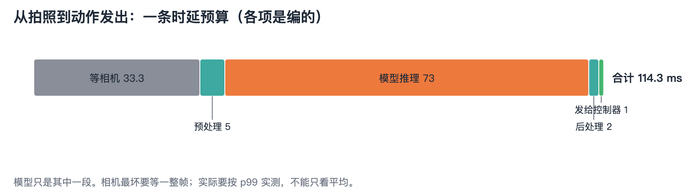

第 6 章 · 实时调度：动作块、异步推理、快慢两套系统
本地运行
git clone https://github.com/wikieden/robot-edge-inference
cd robot-edge-inference/code/notebooks
pip install jupyterlab torch numpy
jupyter lab ch06_realtime_scheduling.ipynb也可以下载后直接用 VS Code 打开 .ipynb 运行。需要 GPU 的章节在 Colab 里选「代码执行程序 → 更改运行时类型 → GPU」。
本章回答：推理比控制周期慢得多，机器人怎么做到动作不卡？同步执行和异步执行差在哪？从拍照到电机动起来，时间都花在哪？
编写日期：2026-11-26 · 上一章：第 5 章 推理引擎 · 下一章：第 7 章 功耗与端云分工
对应原文：vla-deep-dive/materials/text/papers/smolvla-2506.01844.txt§3.3 L300–L392（异步推理、阈值 g）；pi0-2410.24164.txtL938–L940（每执行 25 步推理一次）；gr00t-n1-2503.14734.txtL78–L89（System 2 10 Hz、System 1 120 Hz）；real-time-chunking-2506.07339.txt（RTC，讲义见 vla-deep-dive 第 13 章）
本章缩写：sync / async = synchronous / asynchronous（同步 / 异步）· RTC = Real-Time Chunking（实时 / 分块）· p99 = 99th percentile（第 99 百分位：100 次里最慢的那 1 次左右）· fps = frames per second（每秒帧数）· jitter = 抖动（每次耗时不一样）· NITROS = NVIDIA Isaac Transport for ROS（Isaac ROS 的零拷贝传输）· 其余见附录 · 缩写与术语表
讲解
第一步：同步执行：做完一块，停下来等（2026-11-26）
类比：一个厨师又切菜又看菜谱。 切完手上这批菜，停下来翻下一页菜谱，翻完再切。翻菜谱的时间，刀是停着的。
同步执行就是这样：机器人执行完 \(E\) 步动作后，拍一张照、发起推理，推理期间不动，新的动作块回来才继续。
- \(L\)：一次推理的时间（latency）；
- \(E\)：每轮执行多少步再推理（π0 是 25 步）；
- \(\Delta t\)：控制周期，读作"delta t"（50 Hz 时是 20 ms）。
算一遍（π0 的设置：\(E = 25\)、\(\Delta t = 20\) ms）：
| 推理时间 \(L\) | 每轮 | 停着的比例 |
|---|---|---|
| 73 ms（RTX 4090 实测） | 573 ms | \(73 \div 573 = 12.7\%\) |
| 300 ms（编的，代表搬到小板子上变慢） | 800 ms | \(300 \div 800 = 37.5\%\) |
停着不只是慢。机器人每隔一段时间顿一下，动作不连贯，还可能和训练数据里的节奏不一样（OpenVLA int8 就是这样掉了成功率，第 4 章第三步）。
一句话：同步执行时推理期间机器人停着；推理越慢，停得越多，动作越卡。
第二步：异步执行：提前发起，边做边等（2026-11-26）
类比：厨师请个帮手翻菜谱。 手上的菜还剩一半时，就让帮手去翻下一页；切完手上的，下一页刚好翻好，刀不用停。
SmolVLA 论文把这个叫异步推理（§3.3 L300–L325）：执行动作和推理分开跑，动作队列还剩一定比例时就发起下一次推理。阈值写作 \(g\)（L380–L392）：
- \(g = 0\)：队列用完才发起，就是同步执行，推理期间机器人空着；
- \(g = 0.7\)：队列消耗掉约 30% 就发起下一次推理（L387），推理期间照常执行剩下的 70%；
- \(g = 1\)：每一步都推理，最费算力。
不断档的条件：推理必须在剩下的动作用完前回来。
- \(H\)：动作块的步数（π0 是 50）。
算一遍（\(H = 50\)、\(\Delta t = 20\) ms）：
| \(g\) | 发起时队列剩 | 推理必须在多少 ms 内回来 |
|---|---|---|
| 0 | 0 步 | 0 ms（必然停顿） |
| 0.5 | 25 步 | 500 ms |
| 0.7 | 35 步 | 700 ms |
\(g\) 越大，留给推理的时间越多，但推理越频繁、越耗电（第 7 章）。
一句话：异步执行在队列还剩 \(g\) 成时就发起推理，只要推理时间 ≤ \(g \times H \times \Delta t\)，动作就不断档。
第三步：新旧两块怎么接：不跳变（2026-11-26）
异步执行还有一个问题：新动作块回来时，旧块还没执行完。两块在重叠的那几步里给的动作可能不一样，直接切过去，机械臂会跳一下。
常见做法：
- 重叠部分做平均：SmolVLA 在重叠的时间步上把新旧两个队列合并（L389–L392）；
- 实时分块 RTC：把已经承诺要执行的前几步当成固定的，新块只在后面"补画"，保证接上（π 团队的 Real-Time Chunking，讲义见 vla-deep-dive 第 13 章）。GR00T 2 在 Thor 上也用了 RTC，160 ms 延迟下峰值 jerk（加加速度）降 69%（gr00t2 第 10 章）。
一句话：新旧动作块要平滑接上，常用重叠平均或 RTC 固定已承诺的前几步。
第四步：快慢两套系统，和一条完整的时延预算（2026-11-26）
快慢两套系统：GR00T N1 把模型拆开（L78–L89），看图想事的 VLM（System 2）在 L40 上 10 Hz，出动作的部分（System 1）120 Hz。每 100 ms 更新一次"想法"，中间 System 1 出 12 步动作。慢的部分可以放在更慢、更省电的地方跑，快的部分必须准时。
时延预算：模型只是一段。从相机拍照到电机动起来，每段都要算进去。

| 段 | 耗时（都是编的，自己的机器要实测） |
|---|---|
| 等下一帧相机（30 fps，最坏要等一整帧 \(1000 \div 30\)） | 33.3 ms |
| 预处理（缩放、归一化） | 5 ms |
| 模型推理（用 π0 在 4090 上的 73 ms） | 73 ms |
| 后处理（反归一化成关节角） | 2 ms |
| 发给控制器 | 1 ms |
| 合计 | 114.3 ms |
三个工程要点：
- 按 p99 设计，不按平均：100 次里最慢的那几次决定会不会断档。测延迟要跑几百次看分布。
- 减少拷贝：相机图像在 ROS 2 节点之间传，每拷一次都要时间；Isaac ROS 的 NITROS 让图像在 GPU 内存里直接传，不经过 CPU 拷贝。
- 隔离：推理进程、控制进程绑到不同的 CPU 核，避免日志、录包之类的任务抢资源造成抖动。
一句话：慢的想、快的动；时延要从拍照算到发出，按 p99 留余量。
动画演示：同步停下等，异步不断档

可交互版：animations/06-realtime-scheduling.html（滑块：一次推理要多少 ms，异步 g = 0.5）
怎么看：
- 蓝线是动作队列还剩几步，红色区域是机器人停着等的时间；
- 同步、推理 73 ms：每用完 25 步停一小段（第一步）；
- 同步、推理 300 ms：红色变宽（第一步）；
- 异步 g = 0.5、推理 300 ms：没有红色，队列一直没见底（第二步）；
- 异步、推理 600 ms：超过 500 ms 的预算，又出现红色；
- 拖滑块，找出红色刚好出现的推理时间。
练习与作答记录
题 1（第一步）：同步执行，每执行 16 步推理一次，控制 50 Hz，推理 180 ms。机器人停着的时间占百分之几？
作答：（待作答）
题 2（第二步）：动作块 \(H = 40\)，控制 50 Hz，推理要 450 ms。用异步执行，\(g\) 至少要取多少才不会断档？
作答：（待作答）
题 3（第四步）：时延预算里，把相机从 30 fps 换成 60 fps，最坏等帧时间变成多少？合计变成多少？
作答：（待作答）
口诀
同步做完停下等，推理越慢停越多；
异步剩 g 就发起，L 小于 g H 乘 Δt；
新旧两块要接平，重叠平均或 RTC；
慢的想来快的动，预算看 p99。
本章复习卡片
附录 · 延伸阅读
留给以后深入学习用，不影响本章主线。★ 是建议先读的。
推荐阅读
| 读什么 | 读哪里 | 读它为了什么 |
|---|---|---|
| ★ SmolVLA 论文 §3.3 | vla-deep-dive/materials/text/papers/smolvla-2506.01844.txt L300–L392（Algorithm 1 L331） |
异步推理的完整算法和阈值 g |
| ★ VLA 讲义 · RTC | vla-deep-dive 第 13 章 | 新旧动作块怎么平滑接上 |
| VLA 讲义 · 分层 | vla-deep-dive 第 10 章 | 快慢两套系统的设计 |
| GR00T 2 部署章 | gr00t2 第 10 章 第二步 | RTC 在真实延迟下的平滑度收益 |
| ROS 2 讲义 | ros2 讲义目录 | 节点、话题、QoS，以及部署到真机 |
数学原理
- 占比：停着的时间 ÷ 一轮的总时间。
- 队列不见底：推理开始时队列剩 \(g H\) 步，每步 \(\Delta t\)，所以能撑 \(gH\Delta t\)；推理时间超过它就会断档。
- 百分位：把 \(n\) 次测量从小到大排，第 99% 位置上的数就是 p99。
公式清单
| 公式 | 意思 |
|---|---|
| 停着的比例 \(= L / (L + E\Delta t)\) | 同步执行 |
| \(L \le g H \Delta t\) | 异步执行不断档的条件 |
| 总时延 \(= \sum\) 各段 | 时延预算 |
| 最坏等帧 \(= 1000 / \text{fps}\) ms | 相机帧率带来的等待 |
代码对照：把本章的数字用代码算一遍
纯 Python，不需要安装任何库。代码在仓库本地
ai-infra-edge/solutions/chapter-code/ch06_realtime_scheduling.py，配套测试tests/test_chapters.py::test_ch06，notebook 在notebooks/ch06_realtime_scheduling.ipynb。Mac 上直接能跑，不需要 GPU：
bash cd ai-infra-edge/solutions/chapter-code uv run python ch06_realtime_scheduling.py # 一步一步打印 uv run pytest tests/test_chapters.py -k ch06
讲义 ↔ 代码（73 ms、25 步、50 Hz、g = 0.7 来自论文；300 ms 和时延预算各项是编的）：
| 讲义 | 公式 | 写法 | 跑出来 |
|---|---|---|---|
| 第一步 同步停着的比例 | \(73 / (73 + 25 \times 20)\) | sync_idle_fraction(73, 25, 20) |
12.7% |
| 第一步 推理变慢 | \(300 / 800\) | sync_idle_fraction(300, 25, 20) |
37.5% |
| 第二步 异步预算 | \(0.7 \times 50 \times 20\) | async_budget_ms(50, 0.7, 20) |
700 ms |
| 第四步 时延预算 | 各段相加 | budget_total(parts) |
114.3 ms |
关键几行：
def sync_idle_fraction(infer_ms, exec_steps, dt_ms):
return infer_ms / (infer_ms + exec_steps * dt_ms) # 推理期间不动
def async_budget_ms(chunk, g, dt_ms):
return g * chunk * dt_ms # 队列剩 g 成时发起，能撑这么久
代码里才看得到的 2 件事：
async_budget_ms假设推理时间每次一样。真实推理有抖动，要拿 p99 的推理时间和预算比，不能拿平均值。- 动画里的队列模拟把新块直接接在旧队列后面（每次补 25 步），是简化；SmolVLA 的实现会在重叠部分合并新旧动作。
自己改一改（不影响练习答案）：
- 把
g改成 0.3，看预算变成多少，π0 在 4090 上的 73 ms 还够不够。 - 在
parts里加一项"日志进程抢 CPU 10 ms"，看合计变成多少。